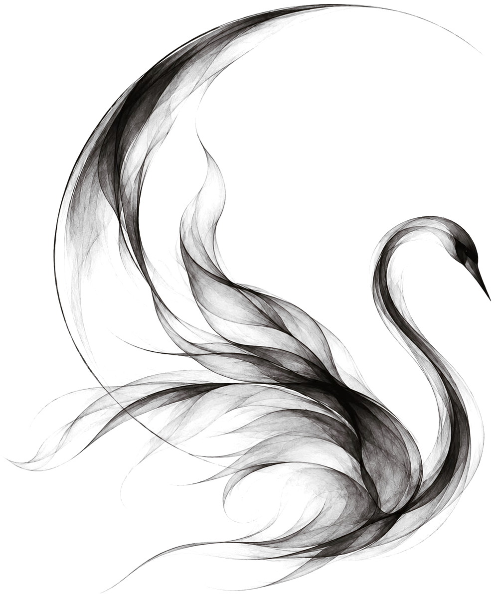
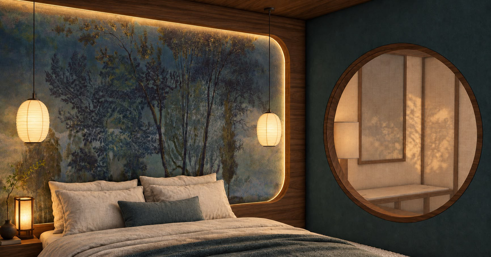
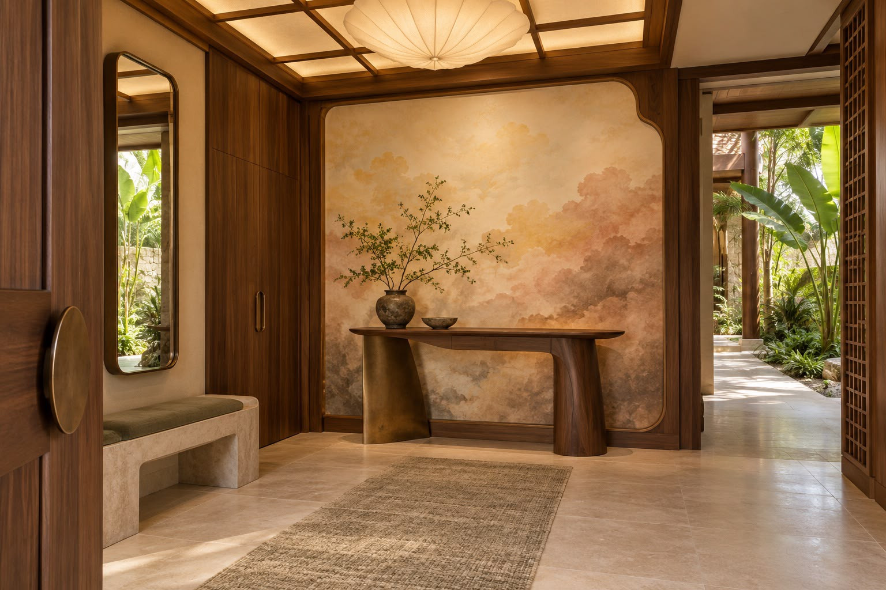
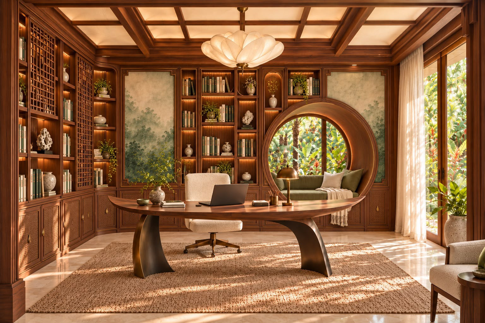

Timeless spaces with a character of their own

Interior architecture · Spatial design · Scenography
Each project begins with the people who will experience it. We pay as much attention to what the light reveals as to what a little shadow lets you discover slowly.
Projects
Courtyard House
Interior architecture4 renders
Casa Tropical
Interior architecture2 renders
Moonlit Suite
Interior architecture2 renders


